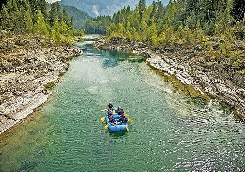
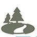
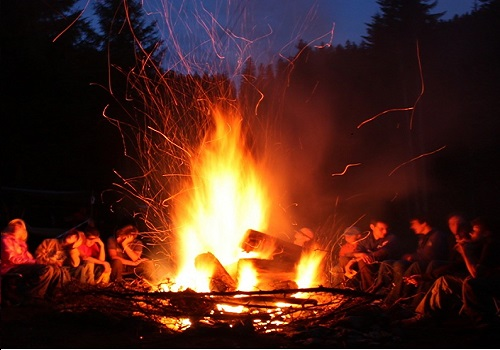
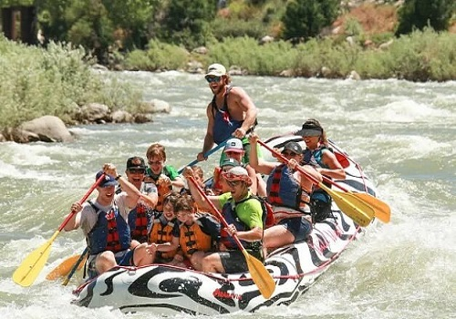
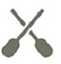
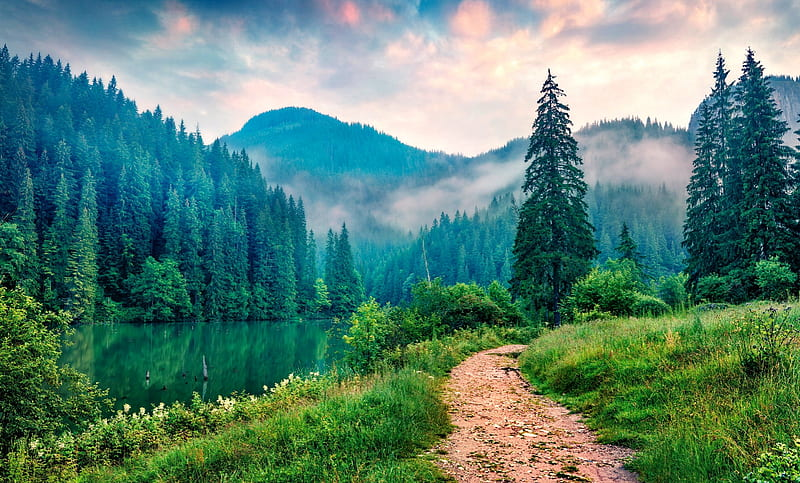

Rivers

Camping


Rapids

More than the thrill
Enjoy the breathtaking scenary. From valleys, meadows, canyons, and high peaks; it's more than just the rapids. It's a great way to get away from it all and relax amongst all the beauty of great outdorrs.
Join Us